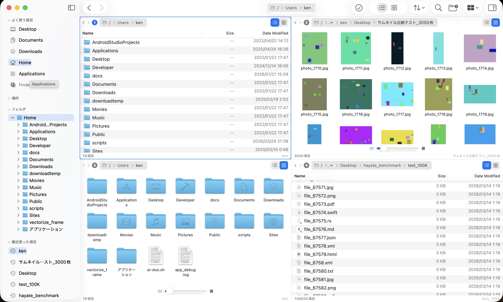
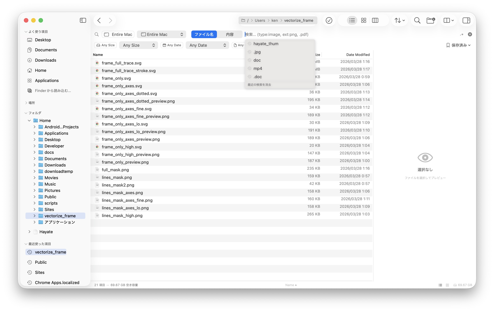
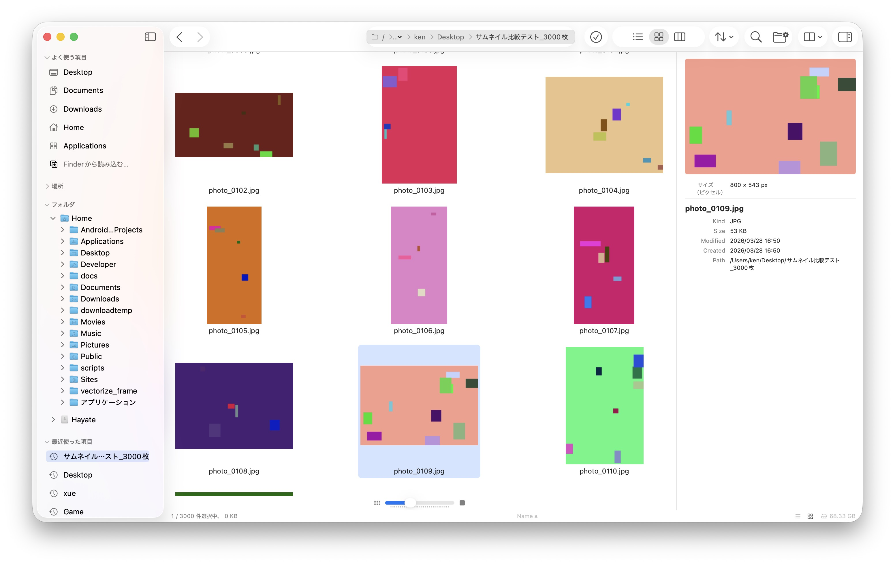
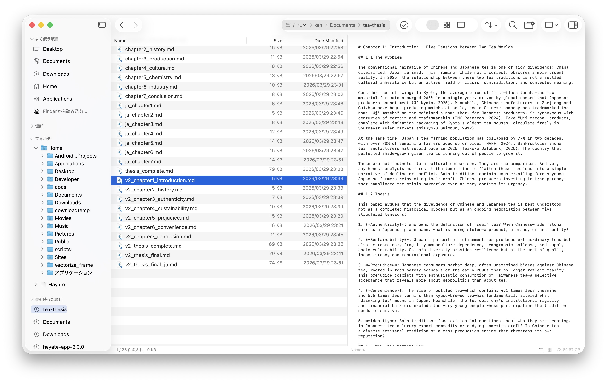

Instant thumbnails for thousands of images. Multi-pane layouts. Native macOS experience.
macOS 14+ • Apple Silicon • 12 MB download

Screenshot: 4-pane layout with thumbnails
Automated benchmarks on MacBook Air M1 (16GB), macOS 26.3.1, March 2026. Same directories; Finder and Hayate run one at a time (Finder first), caches not cleared.
Time until the first files appear and the list can be scrolled
Resident memory while browsing directories
500K files: Finder uses 2.8x more memory and shows the rainbow cursor.
Built with Rust for computation and SwiftUI/AppKit for the UI. No Electron. No web views.
37 features. 13 layouts. One app.
13 layout configurations. Side-by-side, top-bottom, 2×2 grid, 1+3 splits. Choose a layout from the toolbar menu. Each pane navigates independently.
Search by filename, content, type, size, and date. Saved searches, recent queries, and Smart Folders for instant access.

Screenshot: Search interfaceVisible-first parallel generation: thumbnails for what is on screen come first, wherever you scroll.

Screenshot: Gallery with 3000 thumbnailsSee modified, untracked, and staged files at a glance with per-file status badges. Branch indicator in the status bar. No extra Git GUI needed.

Screenshot: Git status badges in file listFull PTY terminal integrated right into your file manager. Always synced to the current directory. No more switching to Terminal.app.
Full Finder-compatible tag support via xattr.
Sequential, find/replace, date, case. Live preview.
Saved criteria (type, size, date, name), re-run with a click.
Per-file status badges. Branch indicator.
Extend with Shell or Python scripts.
Preview video content by hovering.
Press Space to preview with macOS Quick Look.
Keyboard-first design. All conflict-free.
A native macOS app built with Rust and SwiftUI. No Electron. No web views. Pure native performance.
Hayate is free. Help us build the best file manager for macOS.
Requires macOS 14 (Sonoma) or later • Apple Silicon Macs (M1 or later)
Development updates and releases
cd in the terminal moves the file list along, and the file list moves the terminal — only at the prompt, never typed into a running programls -lh) instead of KB, MB, GBhayate_benchmark folder on your Desktop — internal benchmark logging is now debug-only